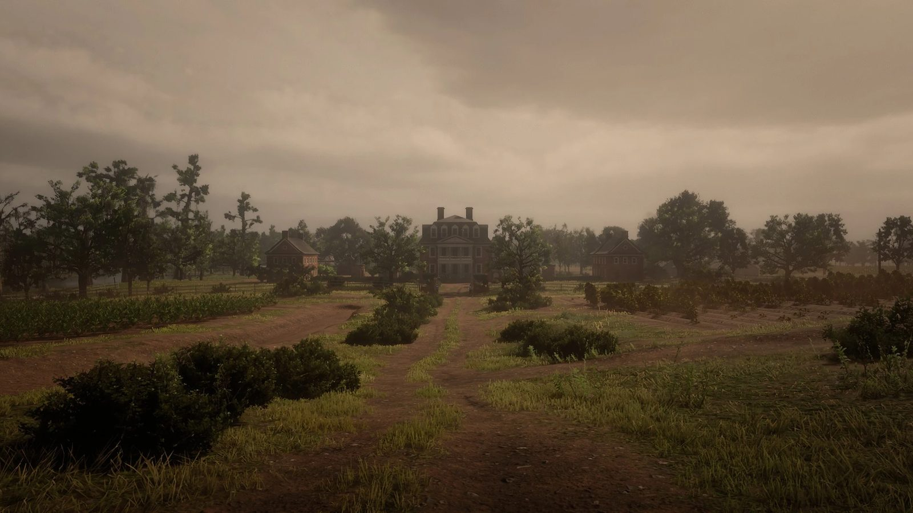
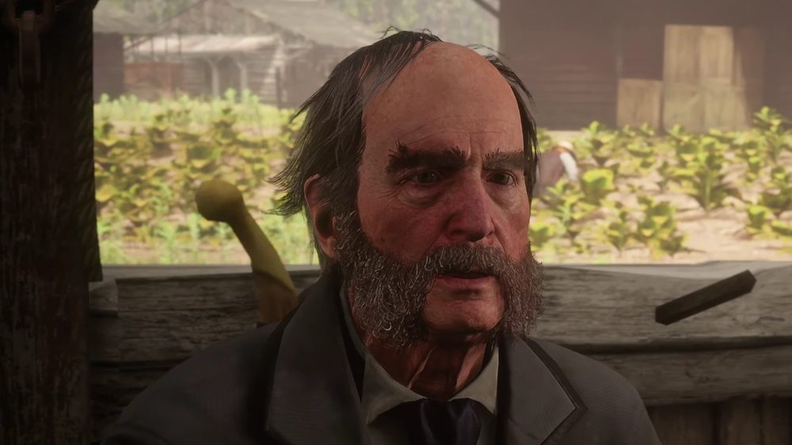
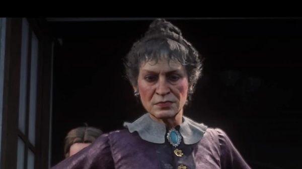
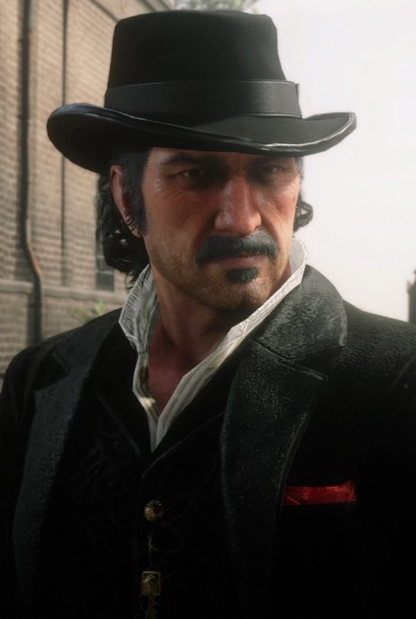
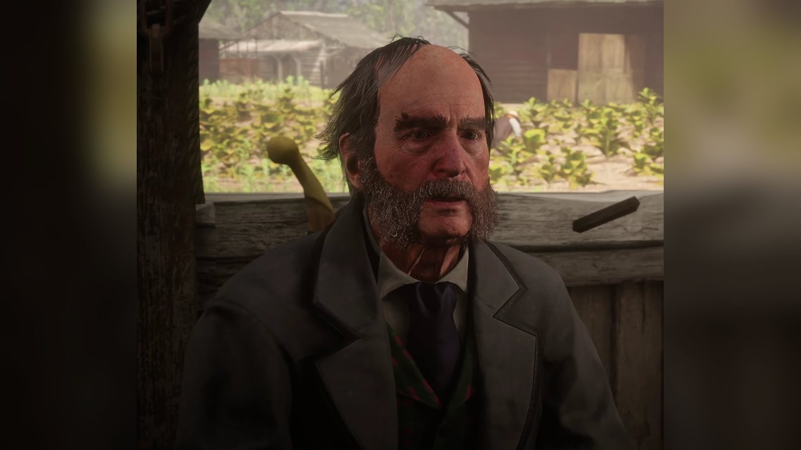

Character · Lemoyne
Tavish Gray
Tavish Gray is the head of the Gray family, tobacco planters at Caliga Hall near Rhodes, in Red Dead Redemption 2 (2018), set in 1899. His family has long feuded with the Braithwaites of Catherine Braithwaite. In chapter 3 he asks Arthur Morgan, John Marston and Javier Escuella to steal the Braithwaites' prized horses, which he says will fetch 5,000 dollars; the fence pays 700. Working for the other side, Arthur and Sean MacGuire burn his tobacco fields. The Grays later lure the gang into an ambush in Rhodes, at which Tavish is not present. He is later found dead on a porch of Caliga Hall, beside a letter addressed to "Mr. Gray" which says that the family's ancestor, Ross Gray, was a paid informer for the Duke of Cumberland. The game does not show how he died.
According to the Red Dead Wiki, he is voiced by Madison Arnold.
- Name
- Tavish Gray
- Also called
- Mr. Gray
- Born
- Not given in the game
- Died
- 1899, found dead on a porch at Caliga Hall; the cause is not shown
- Status
- Deceased
- Nationality
- American; he calls himself Scottish
- Residence
- Caliga Hall, east of Rhodes, Lemoyne
- Occupation
- Head of the Gray family; tobacco planter
- Family
- Son Beau Gray; Sheriff Leigh Gray (his brother according to Beau, his son according to Dutch and Arthur); father Murdo Gray (Beau calls himself Murdo's grandson); ancestor Ross Gray
- Enemies
- The Braithwaite family of Catherine Braithwaite
- Games
- Red Dead Redemption 2
- Voiced by
- Madison Arnold (according to the Red Dead Wiki)
Biography
Origins
The game gives no date or place of birth for Tavish Gray. In 1899 he heads the Gray family, the owners of Caliga Hall, a tobacco plantation in Bayou Nwa, in the state of Lemoyne, between Rhodes and Saint Denis. The Red Dead Wiki describes him as the family's patriarch and its eldest member. His son Beau Gray introduces himself to Arthur as the son of Tavish, the nephew of Sheriff Leigh Gray and the grandson of Murdo Gray. This makes Tavish the brother of the sheriff and the son of Murdo. Tavish speaks of his sons in the plural, and Beau mentions his brothers, but Beau is the only son named.
The game is not consistent on this point. When Arthur meets Tavish, he says he has met his son, the sheriff, and nobody corrects him. Earlier, Dutch explains that Sheriff Gray got the gang its meeting at Caliga Hall by putting in a word with his father (see Quotes). The Red Dead Wiki records both versions and treats the mismatch as an inconsistency in the game. Beau's version, which also appears on the wiki's family pages, is the one this profile follows.
Tavish presents the Grays as an old Scottish family (see In his own words). The Rhodes deputy Archibald MacGregor tells Arthur that the Grays have lived at Caliga Hall for generations and own all the businesses in Rhodes, including the saloon. The family also holds the law in town through Sheriff Leigh Gray. The Red Dead Wiki gives more background. The family arrived in Scarlett Meadows when the region still belonged to France. Its wealth came from tobacco and cotton worked by slaves before the Civil War. Once slavery was abolished, that wealth shrank.
The Grays have been feuding with the Braithwaites of Braithwaite Manor, the family of Catherine Braithwaite. Archibald says the two families have been fighting for as long as he can remember. Josiah Trelawny tells Dutch, in "The New South", that the two old plantation families have fallen out over rebel gold and over who married whom. In "American Distillation", Archibald says that each family believes the other stole a fortune from it long ago, and that he cannot say whether the story is true. The Red Dead Wiki dates the feud to 1806, when Lucille Braithwaite let Douglas Gray, whom the wiki counts among Tavish's ancestors, take her family's hidden gold; he used it, with gold taken from his own family, to fund abolitionist groups, and each family then accused the other of the theft. The wiki also reports that Joe Butler, a Confederate veteran in Rhodes, tells Arthur the Grays made most of their money before settling in Rhodes about fifty years earlier, and that he believes some of them spied for the Union during the war.
Red Dead Redemption 2 (1899)
Chapter 3: Clemens Point
After the move to Clemens Point, near Rhodes, Dutch van der Linde sends Arthur Morgan to find out about the Grays and Hosea Matthews about the Braithwaites. Arthur helps Sheriff Leigh Gray recapture the Anderson boys in "The New South". In "American Distillation", the sheriff deputizes Dutch, Arthur and Bill Williamson to shut down a Braithwaite still. In "The Course of True Love I", Dutch sends Arthur to look around Caliga Hall; the guards let him in only because he says he has been deputized, and he meets Beau instead of Tavish. In "Advertising, The New American Art", Dutch sets out the plan: convince each family that the gang is on its side, then rob both. He also tells Arthur that John Marston and Javier Escuella are at the Grays' place about the Braithwaites' prized horses.
Tavish appears in person in a single mission, "Horse Flesh for Dinner". Arthur joins John and Javier at the stables of Caliga Hall, where they are already talking with Tavish. Tavish is wary: he says the newcomers help everybody in town, that trouble follows them everywhere, and asks who they are. John answers that they lost money on a failed railway speculation out west. Tavish remarks that the country also suits bad men, then speaks of the war and of his family's difficulties. He blames Catherine Braithwaite and her sons for ruining the county and for killing his uncle. He says the Grays cannot be seen to get too close, and that they have gold to pay. He calls John a Yankee; John replies that his own father came over from Scotland, and Tavish says that he is Scottish too. Asked about the Braithwaites, he insults them as peasants and mongrels.
Tavish then makes his offer. The Braithwaites' horses are prize animals that he values at five thousand dollars. A buyer in Clemens Cove will take them out of the state and pay half their value. He asks the three men to keep the Grays out of it in public, and tells them that the thoroughbreds are kept in the stables on the south side of the manor. John accepts. As they ride off, John calls him a crazy old fool, and Arthur says Tavish does not know what he is talking about, though a third of the price would still be worth it. At Braithwaite Manor, John tells a guard that they want to invest in the stables. A stable hand shows them the stallions Cerberus, Old Faithful and Old Father Time, and Arthur kills him. The three men take the horses and fight their way off the estate. At Clemens Cove, the fence Clay Davies says he knows the horses are not theirs and offers 650 dollars, then pays 700. Arthur writes in his journal that the gang believed a story told by one of the Grays and felt like fools (see Quotes).
The order in which the missions are played changes the scene. According to the Red Dead Wiki, if "The Fine Joys of Tobacco" has already been played, the guards at the gate tell Arthur they have had trouble, Tavish tells John and Javier that the burning of his fields makes him suspicious, and John denies any part in it, saying he prefers smoking tobacco to burning it. On the ride out, Arthur then tells John and Javier, who did not know, that he and Sean set the fire. If the horse theft comes first, Arthur warns on the ride out that Hosea and Sean, who are working the Braithwaites, had better keep their heads down. The wiki adds an optional exchange (player choice): if the player dismounts and speaks to Tavish at the start of the mission, Arthur can either thank him for the job or mock the idea that anyone would pay five thousand dollars for stolen horses.
Working for Catherine Braithwaite, Arthur and Sean MacGuire set fire to Tavish's tobacco fields in "The Fine Joys of Tobacco". On the way, Sean says he has heard that security at the estate was doubled after the trouble at the Rhodes saloon. If the horses have already been stolen, Arthur tells him that he took part, which surprises Sean. They get in by posing as a supply wagon. A guard named Hamish tells Sean that Mr. Gray has a heap of problems with another family trying to sabotage his livelihood. The guard is killed, and at nightfall Arthur and Sean douse the fields and a barn with moonshine, set them alight, fight off the guards and escape with horses from a payroll wagon.
Tavish takes no visible part in what follows. In "A Short Walk in a Pretty Town", Micah Bell tells Arthur that some of the Grays have spoken to Bill about a security job in Rhodes. Bill says the Grays think the Braithwaites burned the fields. The job is an ambush, and Sean is shot dead in the street. Sheriff Leigh Gray tells the gang that the Grays know what it has been up to and that Rhodes is the Grays' town. He comes out of his office holding Bill hostage, with his deputies and a man named Jock (Jock Gray, a relative of Tavish, according to the Red Dead Wiki), and Arthur and Micah kill them. When Arthur gets back to camp, Jack Marston has been taken by the Braithwaites, and the gang burns Braithwaite Manor in "Blood Feuds, Ancient and Modern".
Death and the letter from Edinburgh
The game never shows Tavish's death and never states its cause. Arthur can come across him on a porch of the main house (the back porch, according to the Red Dead Wiki), at a point of interest called "Gray's Secret". Tavish is slumped forward in a wicker chair, his right hand on his left forearm. Beside him stands a small marble table with a metal pot and a cup. No weapon or wound is visible. The Red Dead Wiki's page on the point of interest says the body can be found once "Horse Flesh for Dinner" is completed, while the wiki's page on Tavish places his death some time after the Rhodes ambush.
A letter lies on the table beside him. It is dated April 3, 1895, comes from Malcolm Moffat, senior professor of history at Edinburgh University, and is addressed to "Mr. Gray". Moffat thanks him for his "long and well researched letter" about an ancestor who left Scotland for the colonies after the Jacobite rising of 1745, and admits he could not tell whether the man was his great-grandfather or great-great-grandfather. He writes that he is sorry to disappoint a man so proud of being a Scot living in exile, as his correspondent describes himself (see Names).
Moffat has studied the spy networks of the Duke of Cumberland, who kept precise records. According to those records, the ancestor, Ross Gray, was "unquestionably a well-paid informer". He was paid in cattle and cash and was given land confiscated from his neighbor. Moffat writes that this explains why Ross Gray stayed in Scotland until 1755, ten years after the rising, the year some Jacobite supporters began reprisals against known informers in the Highlands. Moffat adds that his own ancestors include both rebels and loyalists, that descending from loyalists is nothing to be ashamed of, and invites Mr. Gray to visit the university. Arthur and John each write about the discovery in their journals (see Quotes).
Red Dead Redemption 2: the epilogue (1907)
According to the Red Dead Wiki, Tavish's body is still in its chair in 1907, unchanged and untouched, when John can visit Caliga Hall. The same source says the Grays have kept Caliga Hall: its tobacco is still farmed by day and armed men still guard it by night. In Rhodes, according to the wiki, Sheriff Harmon Thomas was elected after Leigh Gray's death on a promise to free the town from both families. In "A Quick Favor for an Old Friend", Sadie Adler tells John that the sheriff has done a lot to bring Rhodes into line since the time of the Grays and the Braithwaites. According to the quote list of the Red Dead Wiki, Simon Pearson, who now runs the general store in Rhodes, tells John that people in town still talk about the brutal end of both families.
Personality
Rockstar's character descriptions of September 2018 cover the Van der Linde gang and do not include him. He has a single scene, at the Caliga Hall stables in "Horse Flesh for Dinner". In it he is first wary of the newcomers. He talks about the war, his family and his Scottish roots (see In his own words). He speaks of the Braithwaites only through insults (see Quotes).
Dutch sums up the Grays as "Scots... degenerates... drunkards", adds that they are the local law and calls them "Rich as Croesus". His son Beau says the Grays have been the Braithwaites' murderers for so long that nobody can explain why, "Beyond blind loyalty... and stupidity".
In his own words
- "We haven't recovered as much as I'd hoped from the war. My family try... my sons are good boys, but it's been hard. Like I said, some people in the area will hold us back for ever. We need stability." (to John)
- "We're an old Scottish family. We work. My daddy taught that to me, I taught my sons. Work hard, but fair." (to John)
- "We've got gold, Yankee... we've got gold." (to John)
- "I'm Scottish." (after John claims that his own father came over from Scotland)
- "Just keep us away from this... publicly I mean."
Names
His first name is given by his son Beau (see Quotes). At the stables John calls him Mr. Gray, and the letter found beside his body opens with "Dear Mr. Gray"; in it the historian notes that his correspondent describes himself as a "Scot in exile". Riding away from the stables, John calls him a "Crazy old fool". Sean speaks of an "Old Man Gray" on the way to Caliga Hall in "The Fine Joys of Tobacco"; the game does not say which Gray he means.
Appearance
He is an elderly man with a bald crown, dark hair streaked with gray on the sides and back, heavy dark eyebrows and a full graying beard. At the stables he wears a dark coat over a white shirt, a dark tie and a patterned vest.
Relationships
Beau Gray
His son (see Quotes for how he introduces himself). He is secretly in love with Penelope Braithwaite, of the rival family, and leaves Rhodes with her in chapter 6 with Arthur's help (see Biography).
Leigh Gray
The sheriff of Rhodes, killed in the Rhodes ambush: Tavish's brother according to Beau and both Red Dead Wikis, his son according to Dutch and Arthur (see Biography).
Murdo Gray
His father: Beau calls himself the grandson of old Murdo Gray, and the Red Dead Wiki lists Murdo as Tavish's father. Tavish says his father taught him to work (see In his own words).
Ross Gray
The ancestor who left Scotland for the colonies. The letter found beside Tavish's body says he was a paid informer for the Duke of Cumberland and stayed in Scotland until 1755 (see Biography).

Catherine Braithwaite
The head of the rival family. They never share a scene. He insults her and her sons and accuses them of killing his uncle (see Quotes). She hires the gang to burn his tobacco fields, while he sends it to steal her horses and sell them to a fence (see Biography).

John Marston
John does most of the talking at the stables, accepts the deal and takes the fence's 700 dollars (see Biography).

Arthur Morgan
Arthur joins John and Javier at the stables, asks how much gold is on offer and where to sell the horses. He steals them, then burns the Grays' tobacco fields for Catherine Braithwaite with Sean, and can find Tavish's body on a porch of Caliga Hall (see Biography).

Javier Escuella
Javier is at the stables with John when Arthur arrives, and helps steal the horses (see Biography). He says nothing to Tavish at the stables.

Dutch van der Linde
Dutch plans to make each family believe the gang is on its side, then rob both. He tells Arthur that the sheriff put in a word with his father, which is how John and Javier get the meeting at Caliga Hall. He never meets Tavish on screen. After Sean's death, in a rare camp line, Dutch swears the gang will make the Grays bleed.

Hosea Matthews
Hosea never shares a scene with Tavish. He works the Braithwaite side, and his dealings with Catherine lead to the fire in Tavish's fields (see Biography).

Sean MacGuire
Sean drives the wagon that gets Arthur into Caliga Hall and helps burn the fields (see Biography). He is shot dead in the Grays' ambush in Rhodes; the shooter is not named, and Tavish is not there.

Bill Williamson
Bill says he has been making deals with the Gray men, and it is to him that they offer the security job in Rhodes. The job is the ambush in which Leigh Gray takes him hostage (see Biography).

Micah Bell
Micah waits in Rhodes with Bill and Sean for Arthur before the security job, and fights the Grays' gunmen with Arthur (see Biography). He never meets Tavish.
Clay Davies
The fence at Clemens Cove that Tavish recommends, saying he will take the horses out of state for half their value. He pays 700 dollars for the three stallions (see Biography).
Malcolm Moffat
The University of Edinburgh historian who answers a letter from Mr. Gray about his ancestor. His reply lies beside Tavish's body (see Biography).
Caliga Hall
Caliga Hall is the Gray family's house and tobacco plantation, just east of Rhodes; the Red Dead Wiki places it on the western edge of Bayou Nwa, in Lemoyne. In "The New South", the deputy Archibald MacGregor points out its tobacco fields to Arthur on the road to Rhodes (see Biography). The estate has a main house, stables, barns and cabins for the farmhands, with fields all around.
Armed guards keep strangers out: in "The Course of True Love I", one stops Arthur at the entrance and tells him the property is private. According to Sean, wagons bring supplies, equipment and pay to the estate, which has taken on extra guards (see Biography for its state in 1907). The Red Dead Wiki says the house and grounds closely reproduce Shirley Plantation, in Virginia.
Missions
Tavish Gray appears in one mission of Red Dead Redemption 2, in chapter 3. Other missions take place on his land, involve his family or bring up his feud with the Braithwaites; they are listed in the second table. The events themselves are told in the Biography.
Appearances
| Mission | Chapter | Tavish's role |
|---|---|---|
| Horse Flesh for Dinner | 3. Clemens Point | Asks Arthur, John and Javier to steal Catherine Braithwaite's prized horses, which he values at 5,000 dollars; the fence pays 700. |
Other missions linked to Tavish
| Mission | Chapter | Link with Tavish |
|---|---|---|
| The New South | 3. Clemens Point | Arthur helps Sheriff Leigh Gray catch the Anderson boys. |
| American Distillation | 3. Clemens Point | Leigh Gray deputizes Dutch, Arthur and Bill to shut down a Braithwaite still. |
| The Course of True Love I | 3. Clemens Point | Arthur visits Caliga Hall for the first time and meets Tavish's son Beau. |
| Advertising, The New American Art | 3. Clemens Point | Arthur and Hosea give away Braithwaite moonshine in the Grays' saloon in Rhodes. |
| The Fine Joys of Tobacco | 3. Clemens Point | Arthur and Sean burn Tavish's tobacco fields at Caliga Hall for the Braithwaites. |
| A Short Walk in a Pretty Town | 3. Clemens Point | Sean is killed in a Gray ambush in Rhodes and Leigh Gray dies; Tavish is not there. |
| The Course of True Love V | 6. Beaver Hollow | Arthur helps Beau leave Rhodes by train with Penelope Braithwaite. |
Quotes
The lines below are given in the original English. Tavish's words about himself and his family are quoted under Personality; his lines about the Braithwaites and the horse job are here.
The horse job
You don't know me... you turn up in this town... and you're helping everybody. And everywhere... there's troubles. Who are you?
Tavish to John, at the start of the stables scene, Horse Flesh for Dinner (RDR2, chapter 3)That hag and her inbred sons... they've ruined this county. They killed my uncle, you know.
Tavish on Catherine Braithwaite and her sons, to John and Arthur, Horse Flesh for Dinner (RDR2, chapter 3)Enough. These are prized horses I'm talking about... them they'll get you... five thousand.
Tavish, asked by Arthur how much gold he means, Horse Flesh for Dinner (RDR2, chapter 3)Over in Clemens Cove. Feller over there will run them out of state... and give you fifty cents on the dollar.
Tavish, asked where to sell the horses, Horse Flesh for Dinner (RDR2, chapter 3)Five thousand dollars for horses? We've been robbing the wrong folk all these years.
John, riding away from Caliga Hall, Horse Flesh for Dinner (RDR2, chapter 3)Ain't no one round here got five thousand dollars, boys... but nice meeting you.
The fence Clay Davies, after paying 700 dollars for the horses, Horse Flesh for Dinner (RDR2, chapter 3)Believed a yarn, spun us by one of that Gray family... and imagined we was gonna be wonderfully rich. At the end of it we felt like prize idiots.
Arthur's journal, at the end of Horse Flesh for Dinner (RDR2, chapter 3)
About Tavish and the Grays
Sheriff Gray kindly put in a word with his father.
Dutch, when Arthur asks how the gang got in at the Grays' place, Advertising, The New American Art (RDR2, chapter 3)I'm Beau Gray, son of Tavish Gray... nephew of Leigh Gray the sheriff... grandson of old Murdo Gray.
Beau Gray to Arthur at Caliga Hall, The Course of True Love I (RDR2, chapter 3)Well, well, well. Guess the Gray family ain't quite the proud noble Southern patriots they pretended to be.
Arthur's journal, on finding Tavish's body and the letter (RDR2; caption on the Red Dead Wiki's Gray's Secret page)Seems that the Gray family, who we had all those fights with all them years ago, weren't quite the proud noble Southern patriots they pretended to be.
John's journal, on finding Tavish's body and the letter (RDR2, 1907 epilogue; caption on the Red Dead Wiki's Gray's Secret page)
Development and performance
Casting
Tavish Gray appears only in Red Dead Redemption 2 (2018). Wikipedia's list of the game's characters does not include him. The Red Dead Wiki, in English and in French, gives his voice to Madison Arnold, an American actor, and GTABase credits him with the role as well. Madison Arnold had already worked for Rockstar Games: Wikipedia's article on Grand Theft Auto IV (2008) credits him as the voice of Jon Gravelli, the elderly boss of the Gambetti crime family (GTA Wiki). No source states that he also performed the motion capture.
Cut content
The Red Dead Wiki's page on cut content lists an unused vest for Tavish. The game files also contain an unused member of the Gray family named Adam, who was to appear with other Grays inside Caliga Hall, an interior that was cut. According to the same page, members of the Gray and Braithwaite families could originally be met in free roam. The three stallions stolen in "Horse Flesh for Dinner" were first meant to be unique horses, and the family's name is sometimes spelled "Grey" in the files.
Other media and legacy
The Red Dead Wiki lists Tavish only in Red Dead Redemption 2. Caliga Hall, his estate, is also a location in Red Dead Online, whose story is set in 1898. Leigh Gray appears there as the sheriff of Rhodes, who sells the player a bounty hunter license.
Trivia
- John introduces Arthur to Tavish as "Arthur Morgan", his real name. In "American Distillation", Dutch had introduced him to Sheriff Gray under the alias Arthur Callahan.
- Attacking or killing Tavish fails "Horse Flesh for Dinner".
- According to the Red Dead Wiki, "Gray's Secret" is the only point of interest in the game that requires a specific mission to be completed before it can be found.
- The historian who writes to Mr. Gray, Malcolm Moffat, shares his surname with Geraldine Moffat, the actress who is the mother of Sam and Dan Houser, co-founders of Rockstar Games.
- According to the Red Dead Wiki, "Horse Flesh for Dinner" reuses the idea of a heist cut from Grand Theft Auto V. According to the GTA Wiki, in that heist Michael and Trevor were to visit the house of the cartel boss Martin Madrazo as prospective buyers, in order to take his safe and his prized horse and to kidnap his wife.
- Tavish calls the stolen horses thoroughbreds; according to the Red Dead Wiki, the stallion that breaks loose during the mission is a Black Arabian.
Gallery
